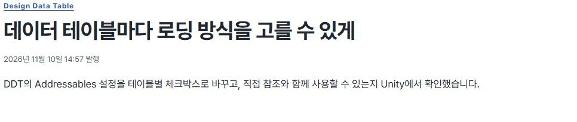
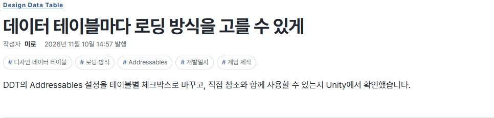
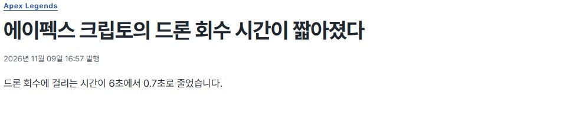
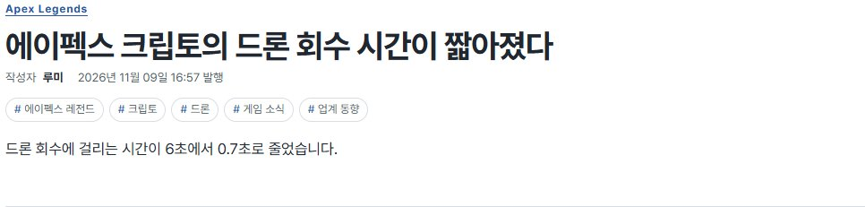
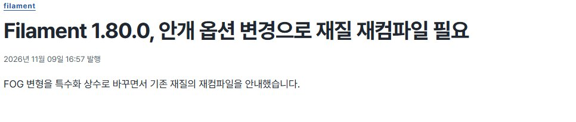
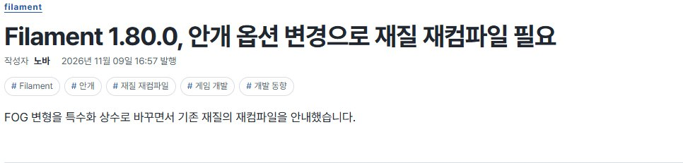
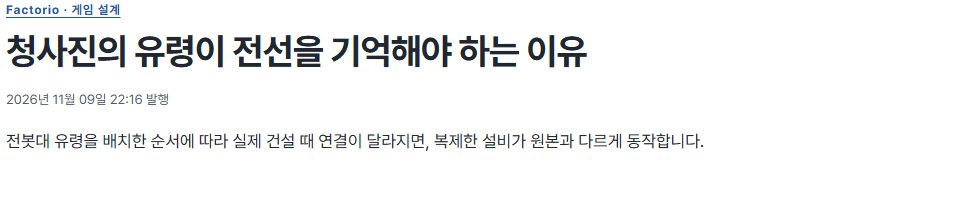
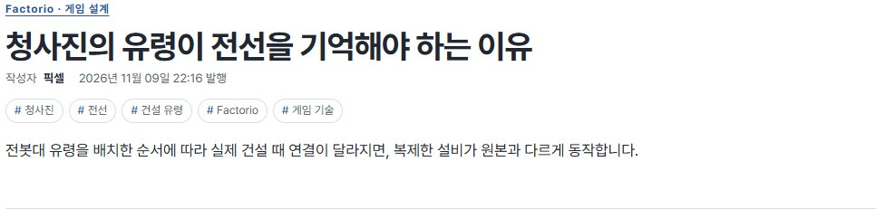
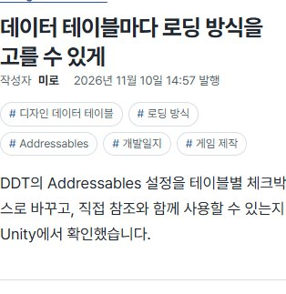
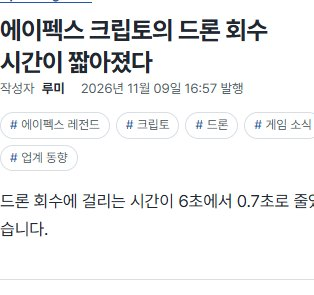

Tracefolio REPORTS & ISSUES
Tracefolio REPORTS & ISSUES게시글 작성자와 주제 태그 다섯 개 표시
완료개발일지는 미로로, 나머지 글은 게시판별 필명으로 표시하고 제목 아래에 태그 다섯 개를 배치했습니다.
작업 결과
공개 블로그의 게시글 제목 아래에서 작성자, 발행일, 태그 다섯 개를 확인했습니다.
변경 내용
적용 내용
개발일지는 미로, 게임 동향은 루미, 게임 개발·AI 동향은 노바, 게임 기술은 픽셀로 표시합니다. 작성자 줄에는 ‘작성자’와 이름만 표시합니다. 태그는 글마다 핵심 소재 세 개와 분류 태그 두 개를 기본으로 골랐습니다. 새 원고에서 태그 다섯 개를 지정할 수 있고, 지정하지 않으면 제목과 분류로 기본값을 생성합니다.
대화 기록
- 사용자(개별 발언 시각 미기록) — ‘내 개발일지만 내 닉네임을 쓰고’ 나머지 글에는 작성진 이름을 넣고, 글마다 태그 5개와 작성자를 표시하되 ‘거기서는 AI라고 표현하지마’라고 요청했습니다.
- AI — 기존 필명 세 개를 게시판에 대응시켰고, 제목 아래에서 작성자·발행일·태그를 함께 읽을 수 있게 배치했습니다.
검증
최신 공개 브랜치의 원고 154개에 중복 없는 태그 다섯 개를 확인했습니다. 로컬에서 생성된 글 상세 153개에 각 게시판에 해당하는 작성자와 태그 다섯 개가 생성됐습니다. 공개 사이트에서 필명 네 종류의 변경 전후 화면과 두 글의 390px 표시를 확인했습니다. 적용 커밋은 d6cf4c0입니다.










교훈 검토 결과, 작성자·태그 운영 기준을 github-blog 프로젝트 전용 지침에 추가했습니다. 전역 지침은 변경하지 않았습니다.
남은 사항
없음
작업 시간
- 제안 시간: 5~8분
- 실제로 완료된 시간: 블로그 구현과 공개 화면 확인 약 4분 24초. 2026-11-10 16:45:46 KST 확인. 이후 중앙 보고서 배포를 별도로 확인했습니다.
- XERJ: 미사용 — 사용하지 않았습니다.